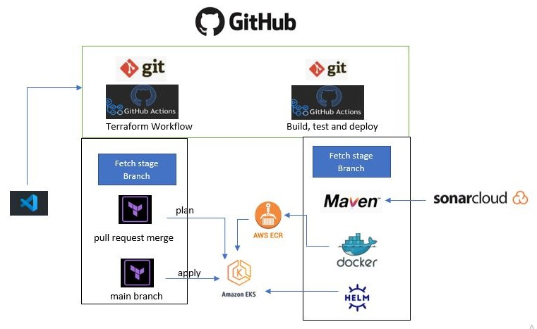

Finance Me
Medicure - GitOps project
Medicure is a super specialty hospital based in New York, USA and provide world class treatment and surgery including Heart, Liver, Kidney transplants and first robotic surgery center. The chain is owned and managed by Global Health Limited.
The Medicure would centrally like to manage all the doctor’s and patient’s data across the Medicure hospitals in various cities. They have developed an microservice, which offers these services. In order to reduce unnecessary maintenance cost and manual labor, they would like to automate their application build and deployment process using DevOps. They are fine to use any one of the (AWS, Azure, GCP) cloud platform as their primary cloud service provider.
The company aims to deliver product updates to production frequently while maintaining high quality and reliability. Changes to applications must be made exclusively through Git, with restrictions on manual interventions. The company seeks to enhance software delivery speed and quality, and to reduce feedback time between developers and testers. To achieve this, they plan to utilize Kubernetes for managing container deployments, including scaling and descaling operations.
Technologies Used
- Git - For version control for tracking changes in the code files
- Maven – For Continuous Build
- GitHub Actions - For continuous integration and continuous deployment
- Docker - For deploying containerized applications
- Ansible - Configuration management tools
- Terraform - For creation of infrastructure.
- EKS - For application deployments
My Role
This project involves using two repositories: one for managing infrastructure with Terraform and the other for source code integration and deployment. Manual interventions are limited to Git SCM.
When a developer pushes updates to the GitHub master branch, a GitHub Actions pipeline is triggered. This pipeline handles code checkout, compilation, testing, packaging, and containerization. A new test cluster is then automatically provisioned and configured with the necessary software. Once the test cluster is healthy and available, the application is automatically deployed to the test server using Kubernetes.
The deployment is tested using a test automation tool, and if successful, the application is deployed to the production server/cluster via Kubernetes. All processes are automated and triggered by a push to the GitHub master branch. The Kubernetes cluster must consist of at least two servers and be continuously monitored with Prometheus, with visualizations displayed on a Grafana dashboard.
Project architecture:
Terraform workflow:
Write a terraform code that will create VPC and EKS using terraform modules

Create github action workflow